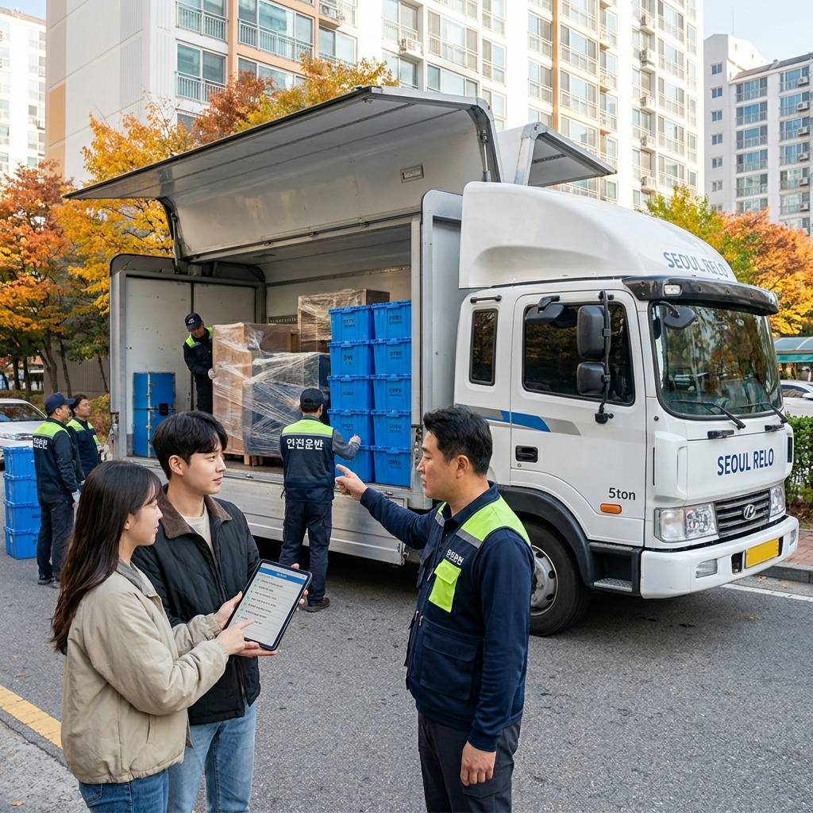
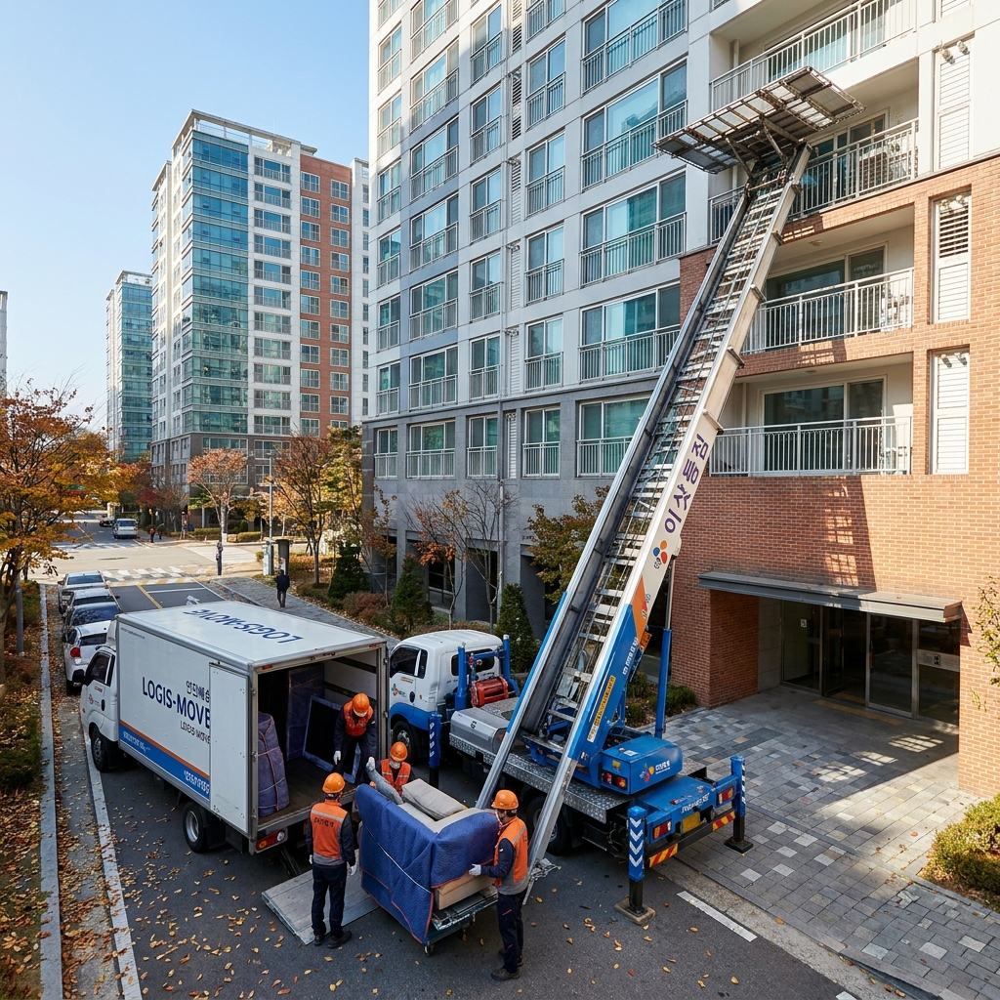

포장이사 vs 반포장이사 비용 차이와 장단점 비교 — 평수별 평균 견적 계산표와 사다리차·식대 추가요금 방지 체크리스트
가을과 봄 이사철을 맞아 이사업체를 선정할 때 가장 고민되는 부분이 바로 '모든 짐을 업체가 정리해 주는 포장이사'와 '잔짐은 본인이 정리하는 반포장이사' 간의 비용 및 서비스 차이입니다.
일반적으로 반포장이사는 포장이사 대비 약 20%~35% 저렴(평균 20만~40만 원 이상 절약)하지만, 도착지에서 옷장, 주방용품, 책 등의 잔짐을 고객이 며칠간 직접 정리해야 하는 시간과 노동력이 소요됩니다.
주거 평수(원룸, 20평대, 30평대)와 투입되는 트럭 톤수(1톤, 2.5톤, 5톤)에 따라 평균 견적 범위가 크게 달라지므로 사전 방문 견적을 통한 정확한 짐량 산정이 필수적입니다.
이사 당일 빈번하게 발생하는 사다리차 이용료, 식대·수고비 요구, 추가 차량 요구 등 악성 추가요금을 차단하는 계약서 특약 작성법과 파손 보상 대처 체크리스트를 상세히 비교해 드립니다.

이사 전문 인력이 전용 포장재로 가구와 짐을 꼼꼼하게 적재하는 작업 모습 / AI 제작 이미지
01 | 포장이사와 반포장이사의 작업 범위 결정적 차이
이사 방식을 선택하기 전, 두 방식의 서비스 범위를 명확히 이해해야 당일 오해와 갈등을 예방할 수 있습니다.
1. 포장이사(Full Moving): 이사의 전 과정을 업체가 도맡아 진행합니다. 출발지에서 가구, 가전제품뿐만 아니라 옷, 이불, 주방 식기까지 전용 박스와 에어캡으로 포장하며, 도착지에서도 대형 가구 배치, 옷장 정리, 주방 수납장 정리(주방 정리 도우미 투입), 그리고 바닥 스팀 청소 및 쓰레기 수거까지 마친 후 철수합니다.
2. 반포장이사(Semi Moving): 출발지에서는 큰 가구와 가전은 업체가 포장하고 박스 잔짐은 고객과 직원이 함께 포장합니다. 운반 후 도착지에서는 대형 가구와 가전의 큰 틀 배치까지만 업체가 담당하며, 박스에 담긴 옷, 그릇, 잔짐은 거실에 풀어놓고 철수하므로 최종 정리정돈은 고객이 직접 며칠에 걸쳐 진행해야 합니다.
따라서 짐이 적고 시간적 여유가 있는 1~2인 가구라면 반포장이사가 훌륭한 절약 수단이 되지만, 짐이 많고 맞벌이 등으로 즉시 일상 복귀가 필요한 3~4인 가구라면 포장이사가 절대적으로 유리합니다.
02 | 평수 및 트럭 톤수별 평균 이사 견적 비용 비교표
실제 시장에서 형성되는 평수별, 톤수별 이사 비용 범위입니다.
(단, 사다리차 이용료, 특수 가전 설치비, 손 없는 날 할증은 제외된 기본 운송 및 인건비 기준 대략적 시장 평균치입니다.)
| 주거 형태 및 평수 |
예상 트럭 톤수 |
투입 작업 인원 |
반포장이사 예상 견적 |
포장이사 예상 견적 |
| 원룸 / 오피스텔 (10평 이하) |
1톤 트럭 1대 |
기사 1명 ~ 작업원 2명 |
약 20만 원 ~ 35만 원 |
약 35만 원 ~ 50만 원 |
| 투룸 / 소형 빌라 (15~20평) |
2.5톤 ~ 5톤 1대 |
남성 2~3명 |
약 50만 원 ~ 75만 원 |
약 75만 원 ~ 100만 원 |
| 중형 아파트 (24~28평) |
5톤 트럭 1대 |
남성 3명 + 주방 이모 1명 |
약 75만 원 ~ 95만 원 |
약 100만 원 ~ 130만 원 |
| 대형 아파트 (30~34평 이상) |
5톤 1대 + 1톤 추가 |
남성 3~4명 + 주방 이모 1명 |
약 95만 원 ~ 125만 원 |
약 130만 원 ~ 170만 원 이상 |
위 견적은 짐의 양, 층수, 엘리베이터 유무, 이동 거리(시내 vs 시외)에 따라 편차가 발생할 수 있으므로, 반드시 2~3곳 이상의 정식 관허업체로부터 무료 방문 견적을 받아 비교하셔야 합니다.
03 | 이사 당일 단골 분쟁! 5대 악성 추가요금과 방지법
계약 당시와 달리 이사 당일 현장에서 갑작스럽게 요구되는 추가요금은 소비자 불만의 80% 이상을 차지합니다.
⚠️ 이사 당일 자주 발생하는 5대 추가요금 분쟁 항목
1. 사다리차 비용 불일치: 층수와 톤수에 따른 사다리차 공식 요율을 사전 확인하지 않고 현장에서 일방적으로 부과하는 경우
2. 식대 및 수고비 요구: 점심 식사비나 시원한 음료값 명목으로 1인당 1~2만 원의 현금을 관행처럼 요구하는 경우
3. 짐량 초과에 따른 추가 트럭비: "견적 때보다 짐이 많아 트럭 1톤을 더 불러야 한다"며 15만~25만 원을 추가 청구하는 경우
4. 특수 가전 분해 및 재설치비: 에어컨 배관 철거, 벽걸이 TV 브라켓 타공, 양문형 냉장고 문짝 탈부착 비용을 별도 청구하는 경우
5. 잔금 및 입주 대기료: 부동산 잔금 처리 지연으로 짐을 실은 트럭이 1~2시간 이상 대기할 때 시간당 대기료를 청구하는 경우
이러한 분쟁을 원천 차단하기 위해서는 계약서 특약란에 "식대, 수고비, 추가 인건비 일체 포함 금액이며 당일 추가금 요구 불가" 문구를 자필로 명시해야 합니다.
04 | 사다리차 이용료 vs 아파트 엘리베이터 사용료 비교
고층 아파트로 이사할 때 사다리차를 쓸지, 엘리베이터를 쓸지에 따라 비용과 편의성이 크게 갈립니다.
1. 사다리차 이용료: 사다리차는 층수와 적재 톤수에 따라 사다리차 협회 표준 요율표가 정해져 있습니다. 예를 들어 5톤 기준 5~10층은 편도 14만~17만 원, 15~20층은 편도 20만~25만 원 수준이며, 양쪽 집 모두 이용할 경우 왕복 30만~50만 원이 발생합니다.
2. 엘리베이터 사용료: 아파트 관리사무소에 납부하는 엘리베이터 이용료는 단지에 따라 5만 원에서 15만 원 선으로 사다리차보다 훨씬 저렴합니다.
3. 결정 기준: 비용 면에서는 엘리베이터가 유리하지만, 아파트 관리 규약에 따라 이사 시간대가 제한(예: 3시간 이내 완료)되거나 엘리베이터 보양재 설치비가 추가될 수 있습니다.
또한 대형 냉장고나 통가구는 엘리베이터 내부에 들어가지 않을 수 있으므로, 방문 견적 시 소장님과 상의하여 진입 방식을 확정해야 합니다.

아파트 고층 세대의 안전하고 신속한 이사를 위해 투입된 사다리차 작업 현장 / AI 제작 이미지
05 | 정식 관허업체 확인법과 피해보상보증보험 확인
이사 중 가구 파손, 마루 긁힘, 물품 분실 사고가 발생했을 때 합당한 보상을 받기 위해서는 반드시 '정식 화물자동차운송주선사업 허가증'을 보유한 관허업체와 계약해야 합니다.
무허가 무등록 업체(일명 떴다방 업체)는 견적가를 터무니없이 낮게 부른 뒤 당일 추가금을 요구하거나 파손 사고 시 연락을 끊고 잠적해 버리는 경우가 허다합니다.
1. 전국화물자동차운송주선사업연합회 홈페이지 확인: 연합회 누리집이나 허가이사종합정보시스템에서 해당 업체의 상호명과 등록번호를 조회합니다.
2. 적재물 배상책임보험 및 피해보상보증보험 가입 여부: 최소 500만 원 이상의 피해보상보증보험에 가입되어 있는지 보증보험증권을 확인합니다.
3. 서면 계약서 필수: 전화나 카카오톡 구두 계약은 법적 효력이 취약하므로, 공정거래위원회 표준약관이 인쇄된 공식 서면(또는 전자) 계약서를 반드시 수령하세요.
06 | 이사 전후 물품 파손·분실 발생 시 대처 및 보상 절차
이사 당일 가구나 가전제품에 흠집이나 파손이 발생했을 때 신속하게 보상을 이끌어내는 실전 행동 요령입니다.
📸 이사 물품 파손 발생 시 4단계 실전 대응 절차
1단계. 이사 전 원상태 사진 촬영: 고가 가전(TV, 냉장고), 명품 가구, 고가 식기는 이사 전날 모서리와 액정 상태를 근접 촬영해 둡니다.
2단계. 현장 발견 즉시 현장 작업팀장에게 고지: 짐을 풀거나 배치하는 즉시 파손 부위를 발견하면 그 자리에서 작업 팀장에게 보여주고 확인을 받습니다.
3단계. 현장 사진 및 사실확인서 작성: 파손 부위와 훼손된 포장 박스를 다각도로 촬영하고, 작업 확인서 서명란에 "O번 품목 모서리 파손 확인됨, 추후 보상 처리 예정"이라고 자필 기재합니다.
4단계. 14일 이내 공식 서면 이의신청: 이사화물 표준약관상 파손 통보 기한은 이사일로부터 14일 이내이므로, 해당 기한 내에 견적서와 파손 사진, 제조사 공식 AS 수리 견적서를 업체 본사에 내용증명이나 문자로 발송합니다.
07 | 손 없는 날 vs 평일 비용 차이와 예약 타이밍 팁
이사 비용은 날짜에 따라 최대 30%~50%까지 가격 차이가 벌어집니다.
민속 신앙에서 악귀가 없다는 '손 없는 날(음력 끝자리 9, 0일)'이나 주말(금·토요일), 그리고 월말은 이사 수요가 폭증하여 평일보다 20만 원에서 40만 원 이상 비싸게 책정됩니다.
만약 날짜 선택이 자유롭다면 화·수·목요일 중 평일 중간 요일이자 손 없는 날을 피한 날짜를 선택하시는 것만으로도 수십만 원의 이사 비용을 즉시 절약할 수 있습니다.
인기 있는 우수 팀은 1~2개월 전에 예약이 마감되므로, 이사 날짜가 정해졌다면 최소 한 달 전에는 방문 견적을 받고 계약을 완료하는 것이 좋습니다.
08 | 실패 없는 이사를 위한 단계별 타임라인 체크리스트
이사 2주 전부터 당일까지 차질 없이 진행해야 할 필수 일정표입니다.
📦 이사 D-14부터 D-Day까지 필수 실전 타임라인
• D-14: 폐기물 스티커 구매 또는 무료 가전 수거 예약, 버릴 가구·옷 과감히 비우기 (짐량 줄이기)
• D-7: 아파트 관리사무소에 이사 일자 통보 및 엘리베이터/사다리차 이용 예약, 인터넷·도시가스 이전 신청
• D-3: 냉장고 음식물 정리(냉동식품 비우기), 세탁기 물빼기, 종량제 쓰레기봉투(50L·100L) 2장 준비
• D-1: 귀중품, 현금, 계약서, 처방약, 노트북 등은 개인 가방에 별도 보관(트럭에 싣지 말 것)
• D-Day: 아파트 관리비 정산, 수도·전기·가스 계량기 검침 및 정산, 전입신고 및 확정일자 부여 완료
09 | 핵심 요약 및 최종 선택 가이드
포장이사와 반포장이사 중 어떤 방식을 선택할지는 "본인의 짐 규모와 이사 후 짐 정리에 쏟을 수 있는 시간"에 따라 명확하게 결정할 수 있습니다.
원룸이나 투룸에 거주하며 잔짐을 스스로 분류하고 미니멀하게 정리할 여유가 있다면 반포장이사를 통해 20~30만 원 이상의 알뜰한 비용 절감을 달성할 수 있습니다.
반면 3인 이상 가족 단위이거나 즉시 직장으로 출근해야 하는 맞벌이 부부라면 전문 인력이 포장부터 청소까지 마무리해 주는 포장이사를 선택하는 것이 육체적 피로와 가사 부담을 더는 현명한 투자입니다.
무엇보다 가장 중요한 것은 관허업체 확인과 명확한 서면 계약서 작성이라는 점을 잊지 마시고, 꼼꼼한 사전 준비로 기분 좋고 안전한 새 보금자리 이전을 이루시길 바랍니다.
#포장이사비용
#반포장이사비교
#이사견적비교표
#사다리차비용
#이사추가요금방지
#손없는날이사비용
#이사준비체크리스트
#관허이사업체
#이사짐파손보상
#가을이사철